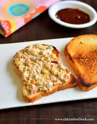

Gulab Jamun
Ingredients
- Sugar
- Milk powder
- Flour
- Ghee (or oil)
- Baking Powder
- Cardamom
- Rose Water
Recipe
- Add 1.5 cups sugar and lightly crushed 4 green cardamoms to a pot. You can also use organic or turbinado sugar, the color of the syrup will be darker.
- Pour 1.5 cups water.
- Boil this until the syrup turns slightly sticky. To check this, cool little syrup in a small plate. Dip your fore finger in it and touch with your thumb. You should feel it is slightly sticky. It should not reach one string consistency. If you fail to make the syrup correctly, then the jamuns will not soak the syrup and turn soft. If you go past the sticky syrup stage, you will end up in a one string consistency. In that case, add little water and stir. Check again. Switch off. Add rose water.
- Measure 1 cup milk powder, ¼ cup +1 tbsps all purpose flour or maida and then a large pinch of soda. If you use more soda then the balls may break.
- Then mix them up very well or sieve it. Make sure the mixture is uniform. Add 1 tsp of ghee.
- Take 1 tbsp of yogurt or ¾ tbsp lemon juice and 2 tbsp of milk. Mix both together.
- Pour 1.5 tbsp of this to the flour. Begin to mix. Use up the rest as needed. I used up full 2 tbsp of it. Do not knead the dough. If the dough is too dry use little more milk.
- The dough turns slightly sticky and refuses to leave the fingers. Grease your fingers and make a stiff yet soft dough. This should be the right consistency of the dough. If by chance it turns sticky sprinkle another tsp of plain flour. This is just to fix and does alter the texture.
- Divide the dough to 14 to 18 equal portions and make smooth balls without any lines or cracks on them. Do not knead or press the balls. Be gentle in handling the dough. Check your syrup if it is still hot. If not, heat it up once more. The syrup must be hot and not very hot. When you dip your finger, you must feel it is hot. But not very hot that you cannot tolerate the heat. Leave it on the stove.
- Pour ghee or oil to a hot pan. I prefer ghee to oil since ghee has a better smoke point than oil.
- Ghee or oil must be just medium hot and not very hot. Else the gulab jamun will brown without cooking inside. To check the correct temperature, add a small piece of the dough to the oil. The ball must rise slowly without changing its color much. This is the right temperature. If the ball rises fast, then it means the temperate is a bit high. Then take off from the stove for a while.
- Add the balls gently and fry them on a medium heat for 1 to 2 mins. I added all of them at one time. But be sure not to crowd them. While frying they will increase in size, so provide them enough space in the pan.
- After 2 mins of frying, reduce the flame to low and fry until golden. Keep stirring gently to fry them evenly. Since I used a flat pan, I tilted my pan slightly and fried to give them a even color.
- When they turn golden, take them off the pan using a deep fry skimmer or a strainer. Drain therm very well.

Mayo Sandwich (veg)
Ingredients
- White or Brown Bread
- Mayonnaise
- Onions
- Green Chilli
- Garlic Powder
- Ball pepper or tomato
- Lettuce
- Corn
- Carrots
- Butter
Recipe
- Butter the Bread slice in a pan and toast till brown crisp appears.
- Take a ball add on the vegetables in diced form and combine all of them in Mayonnaise.
- Spread the mix on a slice of bread.
- Cover with another slide
- Slice veg mayo sandwich and serve.
